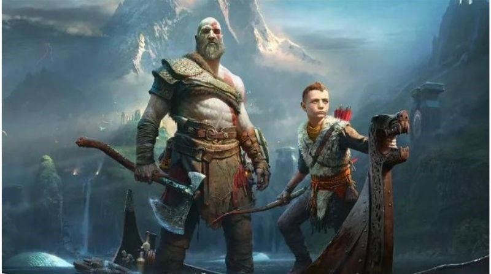
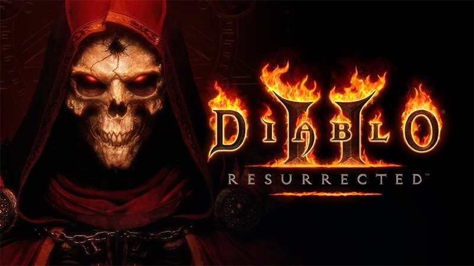

Tin Tức Về Các GAME Nhập Vai hot nhất năm 2024
The Witcher 3: Wild Hunt
Ngày phát hành: 25/05/2024
là một tựa game hành động nhập vai dựa trên bộ tiểu thuyết của nhà văn Andrzej Sapkowski người Balan. Kèm theo đồ họa 3D và âm thanh cực sống động đã thêm phần hấp dẫn cho tựa game này.
Bắt đầu trò chơi, bạn sẽ hóa thân thành Geralt of Rivia người dân xứ Rivia là một vị thợ săn quái vật được ban tặng quyền năng và sức mạnh siêu nhiên...
Skyrim
Ngày phát hành: 25/05/2024
Tiếp theo đây cũng sẽ là một tựa game danh giá mang về cho chủ của nó giải thưởng Game Of The Year của năm 2011, nó có tên là Skyrim. Game lấy bối cảnh của một vùng đất băng tuyết cực kỳ khắc nghiệt, nơi diễn ra cuộc chiến giữa 2 phe quân đội chính là Imperial và quân giải phóng...
Outward
Ngày phát hành: 25/05/2024
Outward là tựa game nhập vai thế giới mở mang phong cách sinh tồn. Khi chơi game bạn luôn phải để ý đến thanh máu của mình để không phải kết thúc game quá sớm. Mọi thứ trong game luôn rình rập và muốn giết bạn bất cứ lúc nào. Từ đó phải phải cảnh giác và chiến đấu để bảo vệ mình và đánh bại tất cả kẻ thù...
Monster Hunter Rise
Ngày phát hành: 25/05/2024
Monster Hunter Rise là phần thứ 6 của loạt game Monster Hunter nổi tiếng trong giới game thủ được ra mắt trong năm 2022. Với bối cảnh game là trong làng Kamura, người chơi cùng với đồng đội của mình có trách nhiệm phải bảo vệ và cung cấp hàng hóa cho làng bằng cách chống lại các quái vật hay những con rồng lớn khác biệt...
God of War Series

Ngày phát hành: 25/05/2024
Game kể về hành trình của Kratos ở vùng đất mới. Trong game này, bên cạnh việc phải tiêu diệt đối thủ là những quái thú và các vị thần thì người chơi còn được khám phá bí ẩn ở thần thoại Hy Lạp và Bắc Âu. God of War Series thuộc thể loại phiêu lưu, hành động còn kết hợp với giải đố để người chơi phải dùng đến não để tư duy nhiều hơn.
Về lối chơi có thể không quá khác biệt với các phần trước...
Sekiro: Shadow Die Twice
Ngày phát hành: 25/05/2024
Sekiro: Shadow Die Twice là một tựa game là một game nhập vai rất kém người chơi vì độ khó quá cao khiến nhiều game thủ phải "lên tiếng". Tuy nhiên game cũng khiến người chơi phấn khích với các tình tiết mới lạ và khác biệt Nhà sản xuất game đã thay đổi hoàn toàn cơ cấu chiến đấu và lối chơi so với các game cùng hãng, chẳng hạn như Souls...
Elden Ring
Ngày phát hành: 25/05/2024
Elden Ring là một tựa game hập vai có điểm số cao nhất bởi vì chất lượng game tuyệt vời, đồ họa đặc sắc cộng thêm độ khó "đau đầu" của game. Chính vì độ khó như vậy nên đây không phải là một con game dành cho số đông hay những người chơi không thực sự kiên nhẫn để vượt qua thử thách...
Divinity: Original Sin 2
Ngày phát hành: 25/05/2024
Divinity: Original Sin 2 lại rất thành công khi đạt được 2 giải thưởng danh giá là game RPG được nhiều game thủ yêu thích nhất và giải game hay nhất của năm do tạp chí PC gamer bình chọn Game có cốt truyện rõ ràng và lối đi riêng của mình và cách kể chuyện cực kì cuốn hút...
Disco Elysium
Ngày phát hành: 25/05/2024
Disco Elysium là game giải đố nhập vai khi tham gia bạn sẽ đóng vai một vị cảnh sát chuyên điều tra các vụ án li kì trong khu vực quản lý của mình Game thuộc dạng phiêu lưu và điều tra...
Diablo II

Ngày phát hành: 25/05/2024
Diablo II là phần tiếp theo của tựa game huyền thoại Diablo được ra mắt trước đó. Cốt truyện xoay quanh việc diễn ra ở một thánh đường của một ngôi làng nhỏ tên là Tristram...